《安猪曲》
tilt 太阳板东西 direction
ROTATE 太阳板 东 西 direction
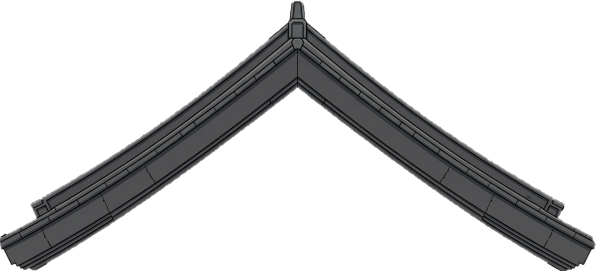
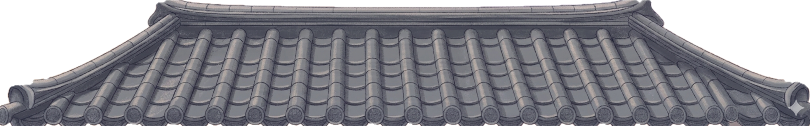

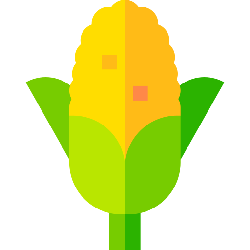
●‿●
≧◡≦
(￣ｰ￣)
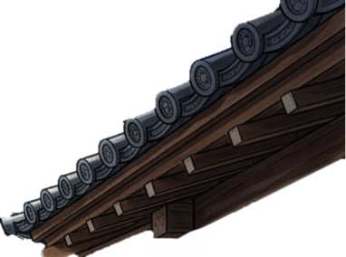
pH:
6.0
EC⚡: 1.8mS
/cm
💧%:
60
💨°C:
21
💧°C:
19
CO₂:
900
ppm
rack:
012
CO₂
🌞I
💧%
💨°C
💨°C
aeroponic
(气耕 qì gēng)
vertical farm


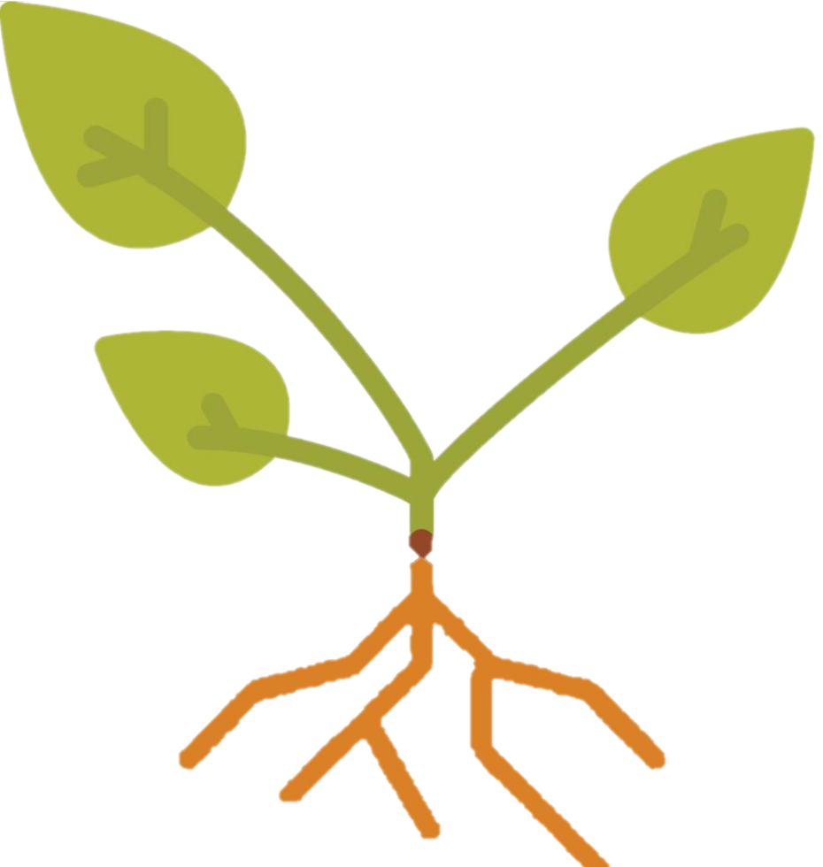
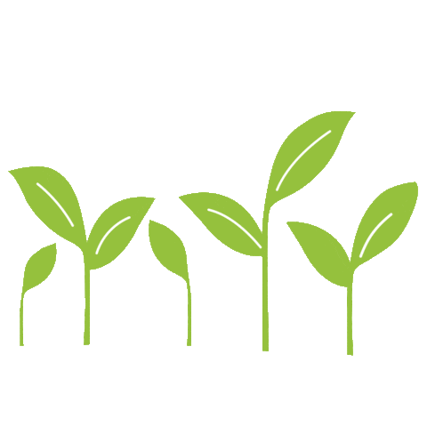
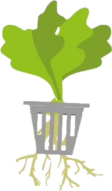
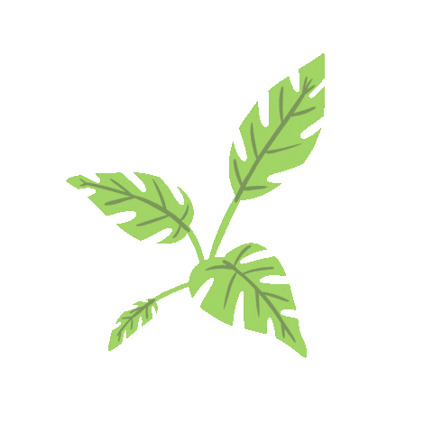
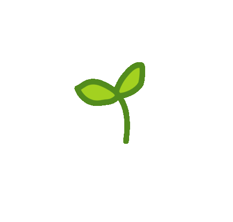
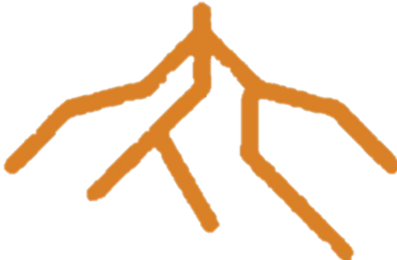
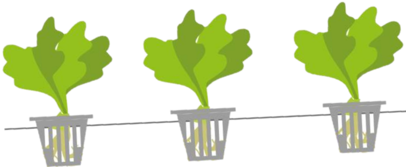
nutrient
茶chá
▲
Sodium ion (Na+) battery🔋
(钠离子电池 Nà lízǐ diànchi)
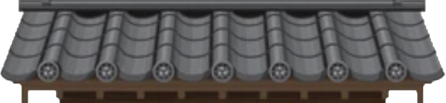
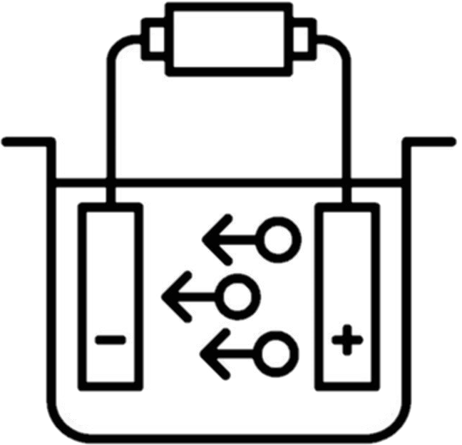
outputs 24V
36V ebike
🔋plug-in
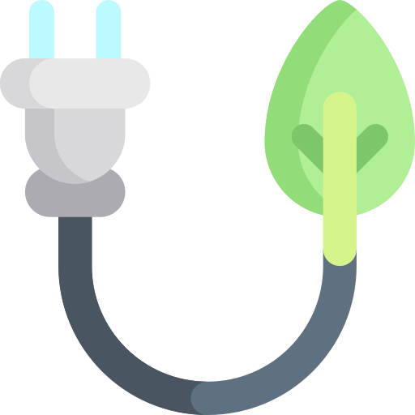